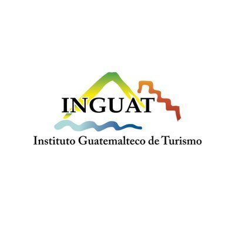

<!DOCTYPE html>
<html lang="es">
<head>
    <meta charset="UTF-8">
    <meta name="viewport" content="width=device-width, initial-scale=1.0">
    <title>TuriEscuintla</title>
    <style>
        body {
            font-family: Arial, sans-serif;
            margin: 0;
            padding: 0;
        }
        header {
            background-color: #007080;
            color: white;
            padding: 27px;
            text-align: center;
        }
        main {
            padding: 20px;
        }
        footer {
            background-color: #333;
            color: white;
            padding: 12px;
            text-align: center;
            position: under;
            bottom: 0;
            width: 100%;
        }
    </style>
</head>

<style>
  body {
    position: relative;
  }
  .watermark {
    position: fixed;
    top: 0;
    left: 0;
    width: 100%;
    height: 100%;
    z-index: -1; /* Para que esté detrás del contenido */
    pointer-events: none; /* Para que no sea clickeable */
    opacity: 0.4; /* Ajusta la opacidad según tu preferencia */
    /* Ajusta la ruta a tu imagen */
    background-image: url('LOGO UMG.jpg');
    /* Ajusta el tamaño de la imagen */
    background-size: contain;
    /* Ajusta la posición de la imagen */
    background-position: center;
  }
</style>
</head>

<style>
  body {
    margin: 0; /* Elimina el margen predeterminado del cuerpo */
    padding: 0; /* Elimina el relleno predeterminado del cuerpo */
    position: relative; /* Establece el contexto de posición */
  }

  #logo {
    position: absolute; /* Establece la posición absoluta */
    top: 0; /* La distancia desde la parte superior es 0 */
    right: 0; /* La distancia desde la derecha es 0 */
    width: 200px; /* Ancho deseado */
    height: 154px; /* Mantener la proporción original */
  }
</style>
</head>
<body>
  
</body>

<style>
  .logo {
    position: absolute;
    top: 0px; /* Ajusta según sea necesario */
    left: 0px; /* Ajusta según sea necesario */
    width: 200px; /* Ancho deseado */
    height: 154px; /* Mantener la proporción original */
  }
</style>
</head>
<body>
  
</body>

<style>
        table {
            width: 50%;
            border-collapse: collapse;
            margin: 20px 0;
            font-size: 18px;
            text-align: left;
        }
        th, td {
            padding: 12px;
            border: 5px solid #000;
        }
        th {
            background-color: #f2f2f2;
        }
        tr:nth-child(even) {
            background-color: #f9f9f9;
        }
    </style>
</head>

<body>
  <div class="watermark"></div>
 </body>

<body>

<header>
    <h3>Ingenieria en Sistemas de Información y Ciencias de la Computación, 1er. Ciclo, Sección "B"</h3>
    <p><b><h3>PROYECTO FINAL GRUPO #6</p></b></h3>
</header>

<body><center>

<h2>INFORMACIÓN DE INTEGRANTES</h2>

<table>    <thead>
        <tr>
            <th><center>INTEGRANTES</center></th>
            <th>NO. CARNET</th>
            <th>PARTICIPACIÓN</th>
        </tr>
    </thead>
    <tbody>
        <tr>
            <td><b>Aurey Obed Escalante Amaya</td></b>
            <td><b>0908-16-11446</td></b>
            <td><b><center>10/10</td></b></center>
        </tr>
        <tr>
            <td><b>Jeyson Arnoldo Gómez Morales</b></td>
            <td><b>0908-24-10470</td></b>
            <td><b><center>10/10</td></b></center>
        </tr>
        <tr>
            <td><b>Abdi Magdiel Peréz Meléndez</td></b>
            <td><b>0908-23-3721</td></b>
            <td><b><center>10/10</td></b></center>
        </tr>
        <tr>
            <td><b>Angel Rafael Eduardo Orozco García</td></b>
            <td><b>0908-24-10828</td></b>
            <td><b><center>10/10</td></b></center>
        </tr>
    </tbody>
</table>     
<br> </br>


<br></br>


 
<footer>
    <p>TuriEscuintla 2,024</p>
    <p><b><a href="C:\Users\GMG\OneDrive\Escritorio\Aurey\PROYECTO FINAL SDC\nuevo.HTML">INICIO</a></b></p>
</footer>

</body></center>
</html>


